1-Create a folder called learn_git_again.


2-Cd (change directory) into the learn_git_again folder.
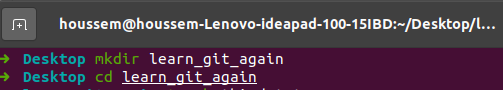3-Create a file called third.txt.
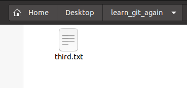
4-Initialize an empty git repository.
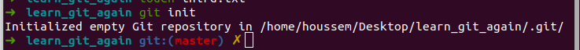5-Add third.txt to the staging area.
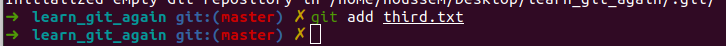
6-Commit with the message "adding third.txt".
7-Check out your commit with git log.
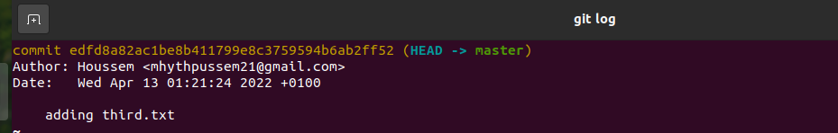
8-Create another file called fourth.txt.
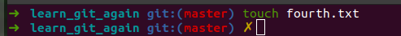
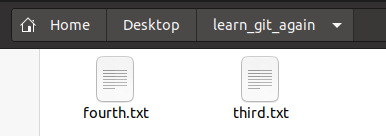
9-Add fourth.txt to the staging area.
10-Commit with the message "adding fourth.txt"
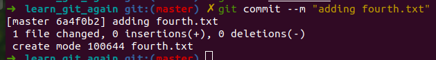
11-Remove the third.txt file.

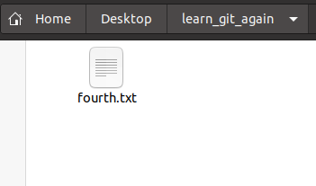
12-Add this change to the staging area.
13-Commit with the message "removing third.txt".
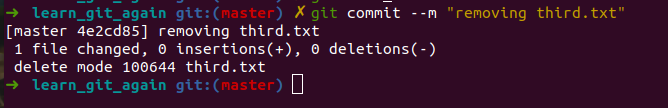
14-Check out your commits using git log.
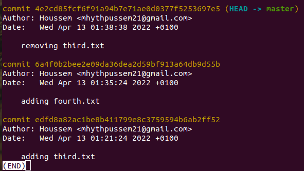
15-Change your global settings to core.pager=cat - you can read more about that here
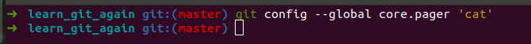
16-Write the appropriate command to list all the global configurations for git on your machine.
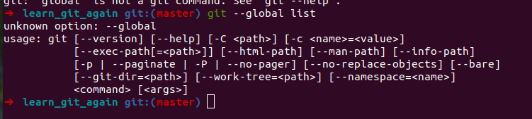
17-You can type git config --global to find out how to do this.
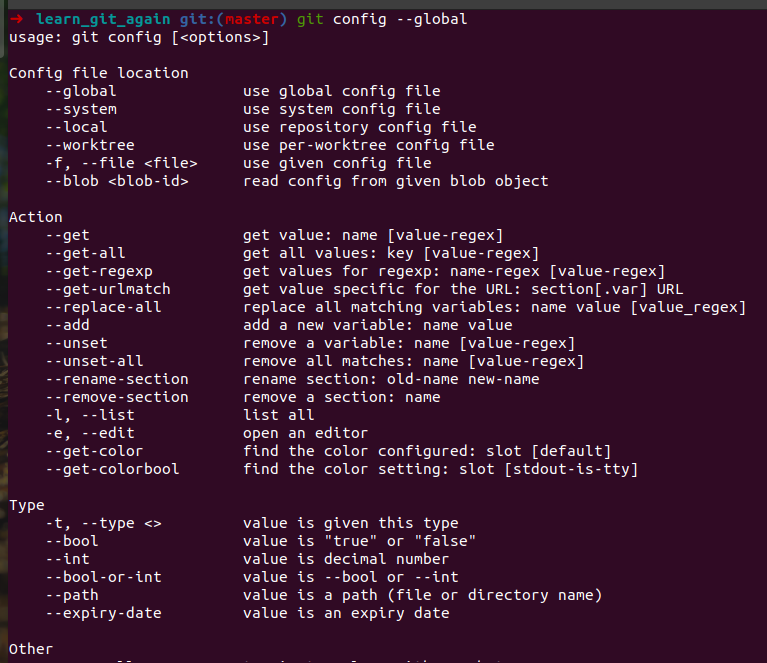
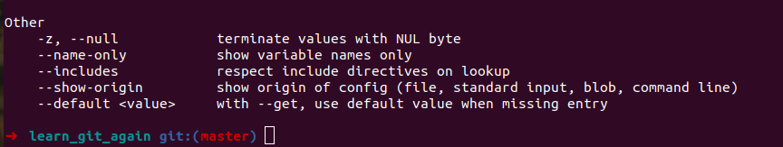